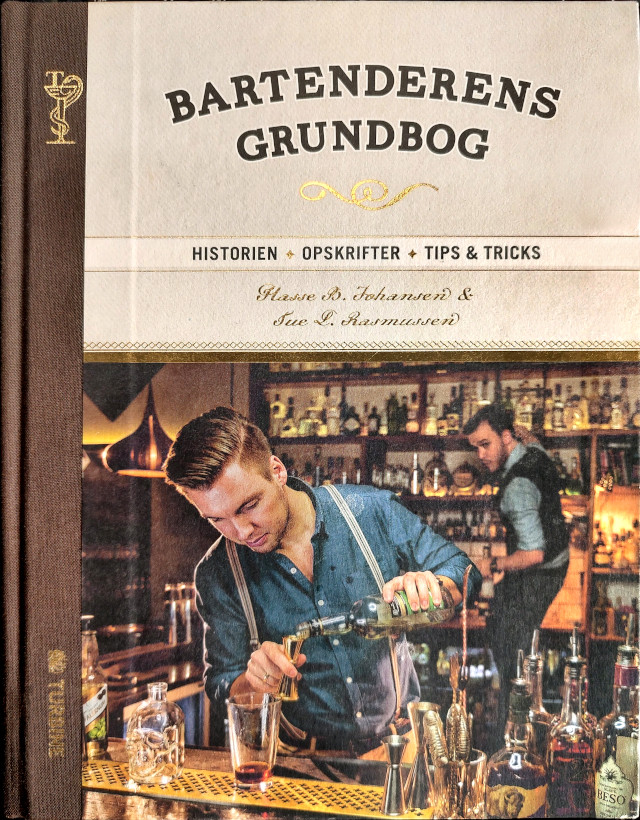

Bogen indeholder opskriften og historien på 52 klassiske cocktails. Denne bog er et must
have.
Forfatter(e)
Karen Nielsen og Tore Leifer
Forlag/ISBN
Gads forlag A/S - ISBN: 978-87-12-05867-0
Bartenderes grundbog
Beskrivelse
Bogen har en god introduktion til drinks, og de redskaber man har brug for. Opskrifterne i bogen er
egne viderudviklinger, og enkelte af dem er også rigtig gode.
Forfatter(e)
Hasse B. Johansen & Tye L. Rasmussen
Forlag/ISBN
Turbine - ISBN: 978-87-406-0187-9
Beskrivelse af glassene
Cocktailtimen
God til drinks med meget alkohol også ren (neat).
Stor munding, så aromaen bliver tydelig.
God til drinks hvor der knuses ingredienser.
Bartenderens grundbo

Det høje glas er velegnet til drinks der har meget is og
juice